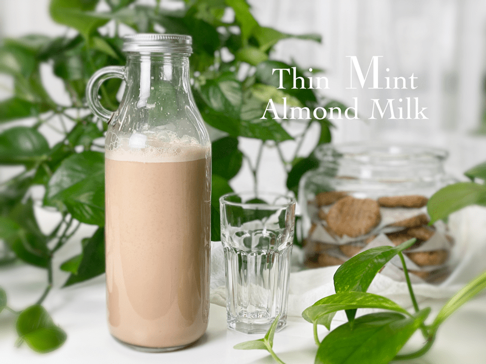
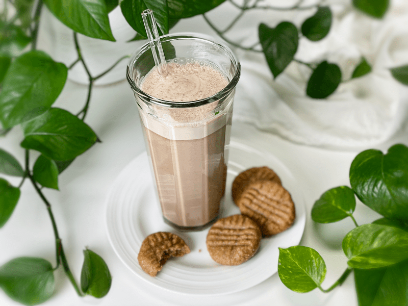
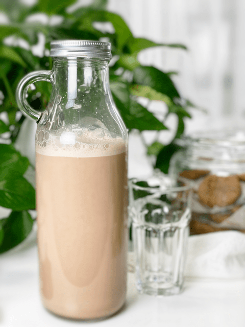

Thin Mint Almond Milk
This delicious non-dairy “milk” reminds me of Thin Mint Girl Scout Cookies, but liquified. Back in the day, it was common practice to place the cookies in the freezer before eating them. So, it was no surprise to find that I REALLY enjoyed this milk when it was nice and cold. You can drink it cold, pour it over ice, or even warm it up to give you all the peppermint hot chocolate vibes of your youth.

Today, I am presenting to you a super simple, yet delicious recipe. My one request is that you through the entire post before starting up your blender. Success happens when you tap into the vision of the recipe creator. I am not here just to share recipes, I am here to share my learning with you. The more I teach within a recipe, the more confidence you will gain in creating your own!
Almonds
- Start off with good quality raw (organic if possible) almonds. Taste them before even thinking of making this recipe. Nuts can go stale and rancid if they have been sitting around a long time–besides, you should always taste your ingredients when creating recipes.
- I highly recommend soaking the almonds before using them to help reduce the enzyme inhibitors and phytic acid. Plus, if you don’t own a high-powered blender, the soaking process will soften them so they can blend nice and smooth.
- I have a great post on how almonds are grown, harvested, and how every part of them is used in the industry. Click (here) for an easy read.
- Cashews would be a great substitution for the almonds. Both nuts are slightly sweet and fairly neutral in flavor. If you do decide to use cashews, you can skip the whole straining process, leaving you with very creamy chocolate milk.
Water
- Nothing complicated here. I just wanted to point out that you can change the consistency of this milk by either adding more or less water to the recipe, depending on what mouthfeel you prefer. The less water you use, the thicker and creamier it will be.
Raw Cacao
- Did you know? Cacao relaxes the vascular system, improves blood flow, and releases serotonin in the brain. Whenever I have a tall glass of plant-based chocolate milk, my heart beats to a better rhythm!
- People often confuse raw cacao powder with cocoa powder. The difference between the two is that cacao powder is made by cold-pressing unroasted cacao beans, keeping the living enzymes in the cacao. Cocoa powder is raw cacao that has been roasted at high temperatures. To learn more about raw cacao, please click (here).
- Raw cacao powder is extremely bitter on its own, which is why you always see a sweetener being added to whatever recipe it is being used in.
- To create a milk chocolate flavor, use 3 tablespoons of raw cacao powder.
- To create a dark chocolate flavor, use 4 tablespoons of raw cacao powder.

Sea Salt
- It may seem odd to add a pinch of sea salt to plant-based milk, but trust me, it works! Salt naturally elevates sweetness and it enhances the raw cacao. The milk won’t taste salty and if done right, it shouldn’t even be detected…it’s there to support the other ingredients.
- If you are looking for an out-of-the-box culinary experience, enjoy your chocolate milk margarita style and salt the rim of your glass. So good. An absolute must-try.
 Medjool Dates
Medjool Dates
- I used Medjool dates as the main sweetener because I find that they have a more complex flavor of caramel, cinnamon, and honey. This added a nice depth of sweetness to the milk.
- Interested in learning how dates are grown and harvested? Click (here).
Peppermint
- I have provided three different options: peppermint extract (made with alcohol, water, oil of spearmint, and peppermint), fresh mint leaves (use leaves only), or peppermint essential oil (I used Young Living Peppermint Vitality Essential Oil).
- Peppermint can QUICKLY overwhelm a recipe, so please use a light hand when adding it. Start with even 1/2 of what I suggested and give it a taste test. You can always add more.
Tips and Techniques (please read)
- If you like to save and freeze the almond pulp after making nut milk, I suggest that you first blend just the almonds and water together, strain, and set the pulp aside. Proceed with the rest of the recipe. If you blend everything at once, the pulp will be sweet and minty, which may not be the flavor profile you are looking for when you go to use the pulp in other recipes.
- If using a peppermint extract or essential oil — do NOT pour the extract into the measuring spoon while holding it over the blender carafe. Same with using essential oils; do NOT let the drop(s) fall from the bottle into the carafe. Put the drop on a spoon first, then just stir it in. It’s too easy to accidentally pour too much in and lose control. One drop can be perfect, two drops can ruin a recipe.
- Be sure to remove the pits from the Medjool dates and double-check them before adding them to the blender. If a pit accidentally gets past your eagle-eye pit-detector, simply strain the milk through a mesh bag to collect the pit fragments. Also, be sure to inspect each date for any molds or critters.
- If you enjoy really cold milk, to the point where you like to add ice cubes to it, I suggest making an extra batch of this milk and freezing some in ice-cube trays. That way, you can enjoy an iced chocolate peppermint almond milk without diluting it.
Top off your day with an ice-cold glass of Chocolate Peppermint Almond Milk! Be sure to leave a comment below. I love hearing from you. amie sue

Ingredients
Yields 3 3/4 cups
- 1 cup raw almonds, soaked
- 4 cups water
- 3 Tbsp raw cacao powder
- 5 large moist Medjool dates, pitted
- 1/2 tsp peppermint extract OR 10 fresh mint leaves OR 1 drop Peppermint Essential Oil
- Pinch sea salt
Preparation
Soaking Process
- Place the nuts in a glass bowl or stainless steel bowl and cover with two cups of water.
- Do not use plastic bowls for soaking, due to the leaching of chemicals.
- Always make sure you add enough water to keep the nuts covered; as they absorb water, they plump up a little bit.
- Keep the bowl at room temperature and cover with a breathable cloth.
- Add 1/4 tsp of sea salt; this helps activate enzymes that deactivate the enzyme inhibitors.
- Soak for 8-24 hours.
Blending Process
- Once the nuts are done soaking, drain, rinse, and discard the soak water.
- Do not reuse the soak water in the milk-making process. This is full of the phytic acid/enzyme inhibitors that were drawn out during the soaking process.
- Place the nuts in a high-powered blender along with the water.
- Start the blender on low and work up to high, then blend for 30-60 seconds or until the nuts have been pulverized.
- A high-powered blender will accomplish the job much easier.
- If you don’t own one, such as a Vitamix or Blendtec, you might have to blend for 1-2 minutes.
- Do not sweeten or add other ingredients until you have strained the milk from the pulp. The pulp can be used in other recipes, and if you strain it first, it will remain neutral-tasting so it can adapt to any other recipe you use it in.
Straining the Milk
- Turn the mesh nut milk bag inside out and keep seams on the outside for easier straining, cleaning, and faster drying.
- Place the nut milk bag in the center of a large bowl.
- Instead of a nut bag, you can drape a triple layer of cheesecloth over the edges of the bowl and pour the milk through it. I find this process messier, and it doesn’t seem to filter it as well.
- Desperate? Don’t have a nut bag or cheesecloth while you are vacationing in France? Take off one of those silky French knee-high nylons, wash it, and pour the milk through it.
- With one hand holding the nut bag, pour the liquid into the bag. Lift the bag, and the milk will start to flow through the mesh holes in the bag. The finer the mesh, the more filtered the milk will be.
- Gather the nut bag (or cheesecloth) around the almond meal and twist close.
- Squeeze the nut pulp with your hand to extract as much liquid as possible.
- Do not toss the nut pulp. Freeze and dehydrate–it can be used in other recipes such as smoothies, crusts, cookies, crackers, cakes, or raw breads.
Assembly
- Pour the almond milk back into the blender and add the cacao powder, pitted dates, peppermint, and a dash of salt. Blend on high for 1 minute. You shouldn’t detect any bits of Medjool dates, but if your blender isn’t high-powered enough, pour it through the nut milk bag one more time.
- The milk is best when chilled, but if you don’t have the patience for that, drink up! Remember you can make any adjustments at this point, such as adding more cacao, sweetener, or mint. Let those tastebuds sing!
- Store leftover milk in the fridge for 3-4 days. The milk will separate after it has sat in the fridge, so shake it before drinking.
© AmieSue.com